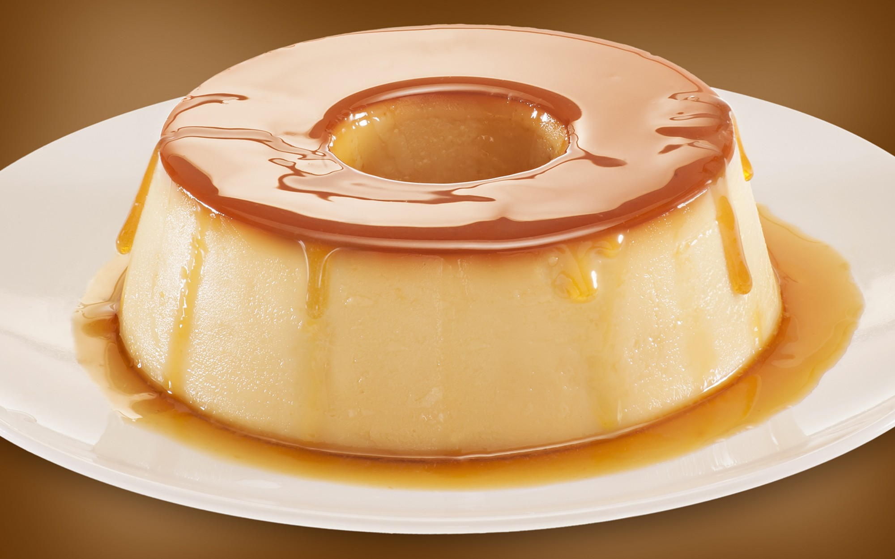
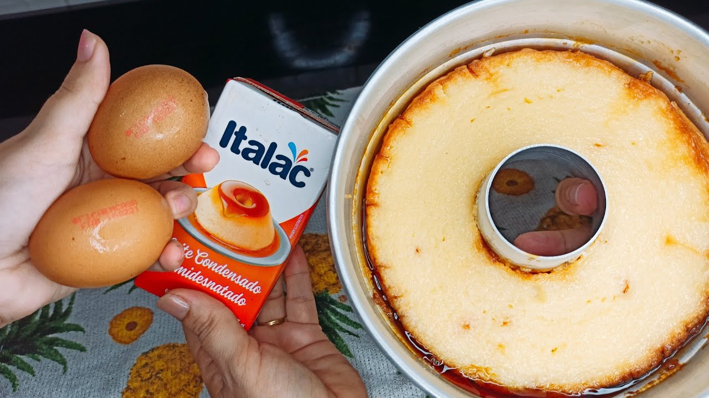
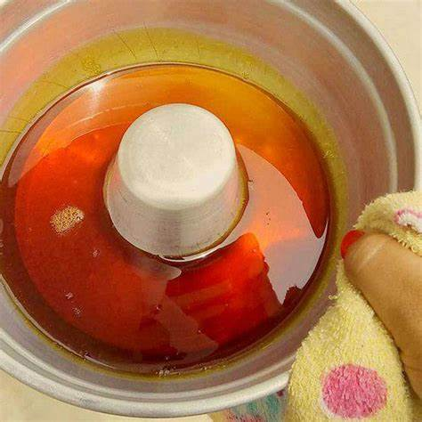

Pudim
Ingredientes
Pudim
- 4 ovos
- 1 lata de leite condensado
- 1 lata de medida de leite
Calda
- 1 xícara de açúcar
- ¹/² xícara de água
- 2 colheres das de sopa de vinagre
Modo de preparo
Pudim
- Bater tudo no liquidificador
Calda
- Coloque o acúcar em uma forma de pudim
- Junte a água com o açúcar e mexa com uma colher
- Derreta até ficar dourado
- Despeje a massa na forma e leve ao forno em banho maria